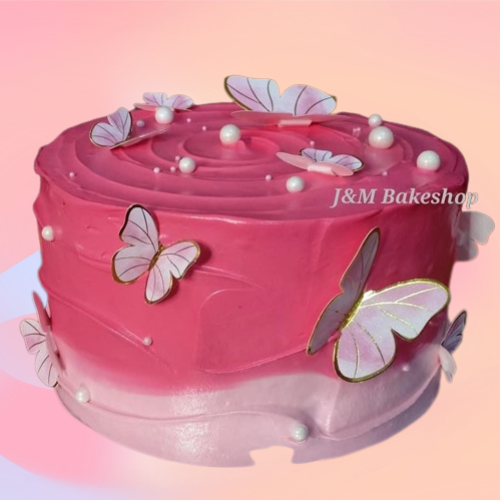

Deliver Exceptional Customization
Recognizing and satisfying clients' individual tastes, flavors, and decorations. We strive to craft unforgettable experiences that captivate all the senses.
Maintain High-Quality Standard
Incorporates the use of high-quality ingredients and the use of skilled workmanship in the production of cakes and design.

Timely Delivery and Freshness
Delivery on schedule requires meticulous preparation and organization, solid packaging to safeguard the cake in transit, and interactions with the client.